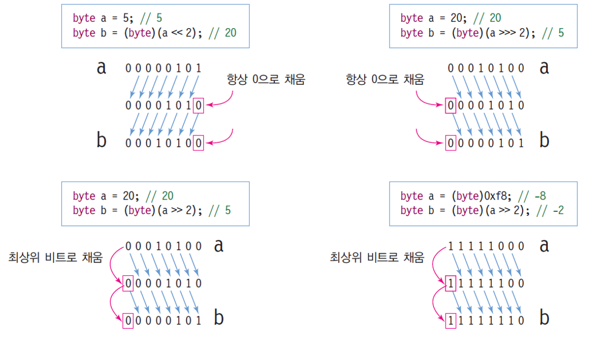

https://cafe.naver.com/jvjvjobjob
네이버 카페
1시 20분 부터 점심시간
중간확인 : 2시 반 부터
6시 20분
컴파일¶
- 자바 : .java -> (컴파일) -> .class
- C : .c -> .obj -> .exe
- C++ : .cpp -> .obj -> .exe
자바의 특성¶
플랫폼 종속성 (platform dependency)가 없다. = CPU, 운영체제 관계 없이 실행 가능.
자바 가상 기계 (JVM) : 각기 다른 플랫폼에 설치해 동일한 자바 실행 환경 제공
바이트 코드 (.class): 자바 가상 기계에서 실행 가능한 바이너리 코드 바이트 코드는 컴퓨터 CPU에 의해 직접 실행되지 않음 자바 가상 기계가 인터프리터 방식으로 바이트 코드 해석
자바의 종류¶
- Java SE (Standard Edition)
- Java ME
- Java EE (Enterprise Edition)
JDK와 JRE¶
- JDK (Java Development Kit) 자바 응용 개발 환경, 개발에 필요한 도구 포함 (컴파일러, JRE, 클래스 라이브러리..)
- JRE (Java Runtime Environment)
API와 Package¶
- 자바 API
- JDK에 포함된 클래스 라이브러리
- https://docs.oracle.com/javase/7/docs/api/
- 자바 패키지
- 서로 관련된 클래스들을 분류하여 묶어 놓은 것
- 계층구조로 되어 있음
자바의 특성¶
- 객체 지향
- 멀티스레드
- 플랫폼 독립성
- 소스(.java)와 클래스(.class) 파일
주석 / 출력문¶
public class Test {
public static void main(String[] args)
{
//주석
/*여러줄 주석
여러줄*/
System.out.println("출력 후 한 줄 띄기")
System.out.print("그냥 출력")
//sysout 입력 후 ctrl+space로 자동완성
}
}
식별자¶
- 안되는 특수 문자: @, #, !, 공백, 탭
- 되는 특수문자: _, $
- 대소문자 구별 : (Test != test)
Eclipse 실행 단축키¶
F11
문자열과 하나의 문자¶
문자열일시 "큰 따옴표" 안에 넣어야만 출력 가능
올바른 예:
잘못된 예:
자바의 데이터 타입¶
-
기본 타입 : 8개
- boolean : True / False (1바이트)
- char : 하나의 문자 Unicode (2바이트)
- 정수
- byte (1바이트)
- short (2바이트)
- int (4바이트)
- long (8바이트)
- 실수
- float (4바이트)
- double (8바이트)
-
레퍼런스 타입 : 1개이며 용도는 다음 3가지
- 클래스(class)에 대한 레퍼런스
- 인터페이스(interface)에 대한 레퍼런스
- 배열(array)에 대한 레퍼런스
변수와 선언¶
- 변수 선언
int radius = 10;
char c1 = 'a', c2 = 'b', c3 = 'c';
//char는 하나의 문자만 인식한다
//(잘못된 예) char c1 = "a"
String a = "hi";
double weight = 75.56;
// = : 대입연산자
// (오른쪽의 값을 왼쪽에 대입한다)
System.out.println("범위: " + radius);
System.out.println(c1 + " " + c2 + " " + c3);
System.out.println(a);
System.out.println(weight);
리터럴 (literal)¶
프로그램에서 직접 표현한 값.
-
정수 타입 리터럴
- 8진수 : 0으로 시작 int n = 015;
- 16진수 : 0x로 시작 int n = 0x15;
- 10진수 : 0으로 시작하지 않는 숫자
- 2진수 : 0b로 시작 int n = 0b0101;
-
long 타입 리터럴은 숫자 뒤에 L 또는 l을 붙여 표시. ex)
24L,3578l -
부동 소수점 실수 직접 표시
12.또는12.0.1234또는0.1234또는1234E-40.1234또는0.1234d->double0.1234f또는0.1234F->float1234D또는1234d->double(1234.0)1234F또는1234f->float(1234.0)
-
논리 값 표시 true 또는 false
- null 리터럴 어떠한 레퍼런스 타입의 값으로도 사용 가능
- 문자열 리터럴
- 큰 따옴표로 묶어서 표현 "Good", "Morning", "자바", "3.19", "25"
- 자바에서 문자열은 객체이므로 기본 타입 아님
- 문자열 리터럴 String 객체로 자동 처리
- String = 레퍼런스 타입 (class 타입)
String str1 = "Welcome";
String str2 = null;
System.out.println(str1);
System.out.println(str2)
/*output:
Welcome
null*/
상수¶
- 상수: 고정된 값
final키워드 사용- 선언 시 초기값 지정
- 실행 중 값 변경 불가
타입 변환¶
자동 타입 변환¶
- 원래의 타입보다 큰 타입으로 바뀔 때 발생
byte >> short/char >> int >> long >> float >> double
강제 타입 변환¶
- 개발자가 코드에 명시적으로 타입 변환 지정
short var1;
int n = 855638017; //0x33000001
var1 = (short) n; //0x0001
System.out.println(var1); //output : 1
double d = 1.9;
int i = (int)d; //i == 1
System.put.println(10/4); //2
System.out.println((float)10/(float)4); //2.5
System.out.println((float)(10/4)); //2.0
System.out.println((int)2.8+1.8); //3.8
System.out.println((int)(2.8+1.8)); //4
식과 연산자¶
- 연산 : 주어진 식을 계산하여 결과를 얻어내는 과정
| 연산의 종류 | 연산자 |
|---|---|
| 증감 | ++ -- |
| 산술 | + - * / % |
| 시프트 | >> << >>> |
| 비교 | > < >= <= == != |
| 비트 | \& | ^ ~ |
| 논리 | \&\& || ! ^ |
| 조건 | ? : |
| 대입 | = *= /= += -= &= ^= <<= >>= >>>= |
산술 연산자¶
/: 정수 몫%: 정수 나머지
비트 연산자¶
- 피 연산자의 각 비트들을 대상으로 하는 연산
| 기호 | 뜻 |
|---|---|
a & b |
AND |
a | b |
OR |
a ^ b |
XOR |
~ a |
NOT |
시프트 연산자¶
https://stackoverflow.com/questions/141525/what-are-bitwise-shift-bit-shift-operators-and-how-do-they-work
a >> ba >>> ba << b

Examples of bit shifting¶
using an 16-bit integer to represent 2 8-bit intergers¶
// Byte1: 11110000
// Byte2: 00001111
Int16 value = ((byte)(Byte1 >> 8) | Byte2));
// value = 000011111110000;
16-bit color¶
A simple real example in graphics programming is that a 16-bit pixel is represented as follows:
To get at the green value you would do this:
#define GREEN_MASK 0x7E0 //0000011111100000 in binary
#define GREEN_OFFSET 5
// Read green
uint16_t green = (pixel & GREEN_MASK) >> GREEN_OFFSET;